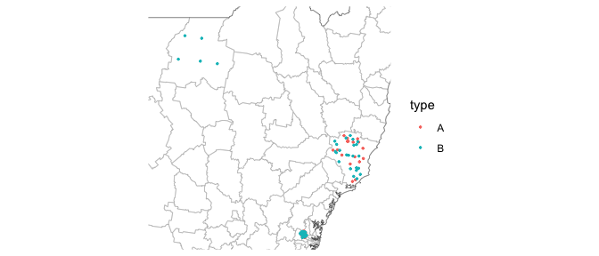
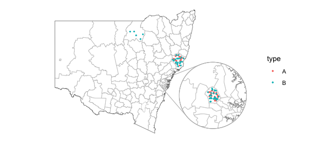
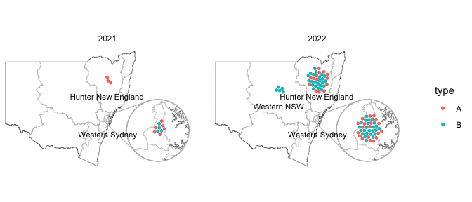
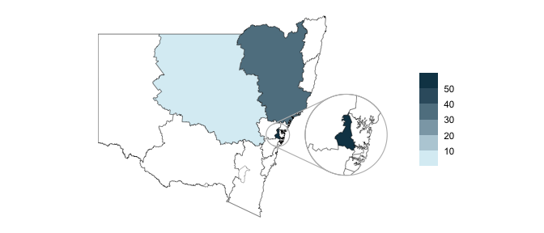
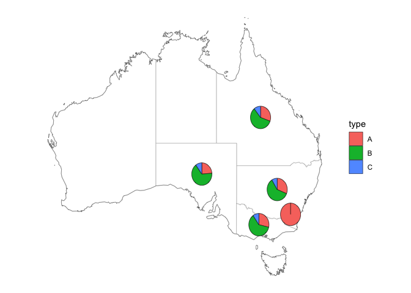

A collection of geospatial datasets and map plotting helpers for working with New South Wales maps.
Installation
You can install nswgeo like so:
options(repos = c(
cidmph = 'https://cidm-ph.r-universe.dev',
CRAN = 'https://cloud.r-project.org'))
install.packages('nswgeo')Examples
The datasets you use with the package will have one column that contains a feature name (Local Health District, Local Government Area, or postal code). You’ll probably also have columns you want to use for faceting and/or colouring points:
library(nswgeo)
library(ggautomap)
library(ggplot2)
library(dplyr, warn.conflicts = FALSE)
data(covid_cases_nsw, package = "nswgeo")
covid_cases_nsw
#> # A tibble: 100 × 5
#> postcode lga lhd year type
#> <chr> <chr> <chr> <int> <chr>
#> 1 2427 Mid-Coast Hunter New England 2022 B
#> 2 2761 Blacktown Western Sydney 2021 A
#> 3 2426 Mid-Coast Hunter New England 2022 B
#> 4 2148 Blacktown Western Sydney 2022 B
#> 5 2768 Blacktown Western Sydney 2021 A
#> 6 2766 Blacktown Western Sydney 2021 B
#> 7 2422 Mid-Coast Hunter New England 2022 B
#> 8 2415 Mid-Coast Hunter New England 2022 B
#> 9 2767 Blacktown Western Sydney 2022 B
#> 10 2768 Blacktown Western Sydney 2022 A
#> # … with 90 more rowsYou need to let the package know which column has the feature by setting the location aesthetic. This example has three different columns of locations for different feature types; your dataset only needs to have one of these.
In general you’ll start with geom_boundaries() to draw the base map. This geom needs to be told which feature_type you’re after (e.g. "nswgeo.lga" for LGAs). All of the summary geoms of ggautomap can then be used to draw your data.
Scatter
covid_cases_nsw %>%
ggplot(aes(location = lga)) +
geom_boundaries(feature_type = "nswgeo.lga") +
geom_geoscatter(aes(colour = type), sample_type = "random", size = 0.5) +
coord_sf_zoom(datum = NA) +
theme_minimal()
Points are drawn at random within the boundaries of their location. This example also uses coord_sf_zoom() as a replacement for coord_sf() that automatically crops the map around your data points.
Insets
To show a zoomed in part of the map as an inset, you can configure an inset and provide it to each relevant geom. The geoms all support ggmapinset.
inset_cfg <- configure_inset(centre = "Blacktown", radius = 40, units = "km",
scale = 7, translation = c(400, -100))
covid_cases_nsw %>%
ggplot(aes(location = lga)) +
geom_boundaries(feature_type = "nswgeo.lga", inset = inset_cfg) +
geom_geoscatter(aes(colour = type), sample_type = "random",
size = 0.5, inset = inset_cfg) +
geom_inset_frame(inset = inset_cfg) +
coord_sf(datum = NA) +
theme_minimal()
Packed points
This next example uses geom_centroids() to place the points in a packed circle in the centre of each feature. It also shows how you can fine-tune the plot with the usual ggplot2 functions.
inset_cfg <- configure_inset(centre = "Western Sydney", radius = 35, units = "km",
scale = 8, translation = c(450, -100))
covid_cases_nsw %>%
filter(year >= 2021) %>%
# set the scale of the packing differently for the inset
mutate(scale_km = if_else(lhd == "Western Sydney", 4, 30)) %>%
ggplot(aes(location = lhd)) +
geom_boundaries(feature_type = "nswgeo.lhd", inset = inset_cfg) +
geom_centroids(aes(colour = type, scale = scale_km), size = 1, inset = inset_cfg) +
geom_inset_frame(inset = inset_cfg) +
coord_sf(datum = NA) +
facet_wrap(vars(year)) +
# use the centroids stat + a fixed nudge to place the text in the right area
geom_text(
aes(after_stat(x), after_stat(y), label = lhd),
stat = "centroids",
nudge_y = -1.2,
size = 3,
data = ~ slice_head(group_by(.x, lhd, year), n = 1)) +
scale_x_continuous(expand = expansion(add = c(NA, 2))) +
labs(x = NULL, y = NULL) +
theme_minimal()
Choropleths
inset_cfg <- configure_inset(centre = "Western Sydney", radius = 60, units = "km",
scale = 3.5, translation = c(350, 0))
covid_cases_nsw %>%
ggplot(aes(location = lhd, group = NA)) +
geom_choropleth(inset = inset_cfg) +
geom_boundaries(feature_type = "nswgeo.lhd", colour = "black", linewidth = 0.1,
outline_colour = "black", inset = inset_cfg) +
geom_inset_frame(inset = inset_cfg) +
coord_sf(datum = NA) +
scale_fill_steps(low = "#e6f9ff", high = "#00394d", n.breaks = 5, na.value = "white") +
labs(x = NULL, y = NULL, fill = NULL) +
theme_minimal()
Pies and Australia
The "nswgeo.states" map data includes the other states for national summaries. Both the abbreviated state names (e.g. "NSW") and the full names (e.g. "New South Wales") are supported in the location aesthetic. This example also shows geom_pie(), which aggregates points in each location.
national_data <- data.frame(state = sample(c("qld", "nsw", "vic", "sa", "act"),
size = 1000, replace = TRUE,
prob = c(0.2, 0.35, 0.3, 0.1, 0.05)),
type = sample(c("A", "B", "C"),
size = 1000, replace = TRUE,
prob = c(0.3, 0.6, 0.1)))
national_data$type[national_data$state == "act"] <- "A"
national_data %>%
ggplot(aes(location = state)) +
geom_boundaries(feature_type = "nswgeo.states") +
geom_pie(aes(fill = type), pie_radius = 1.5) +
coord_sf(datum = NA) +
theme_minimal()